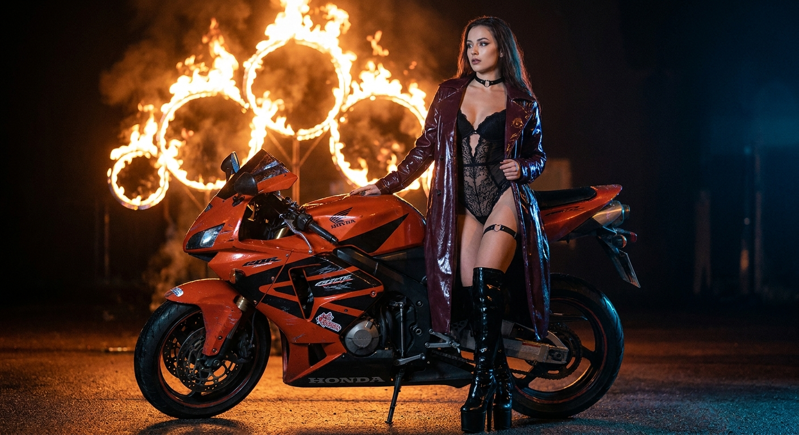
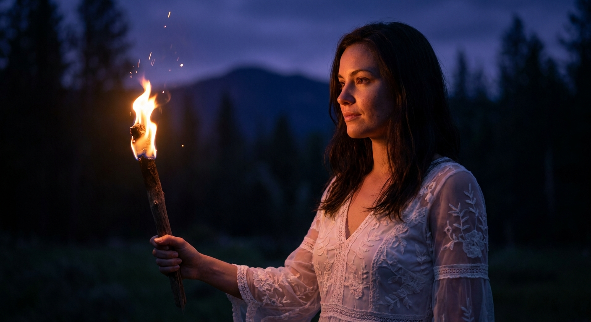
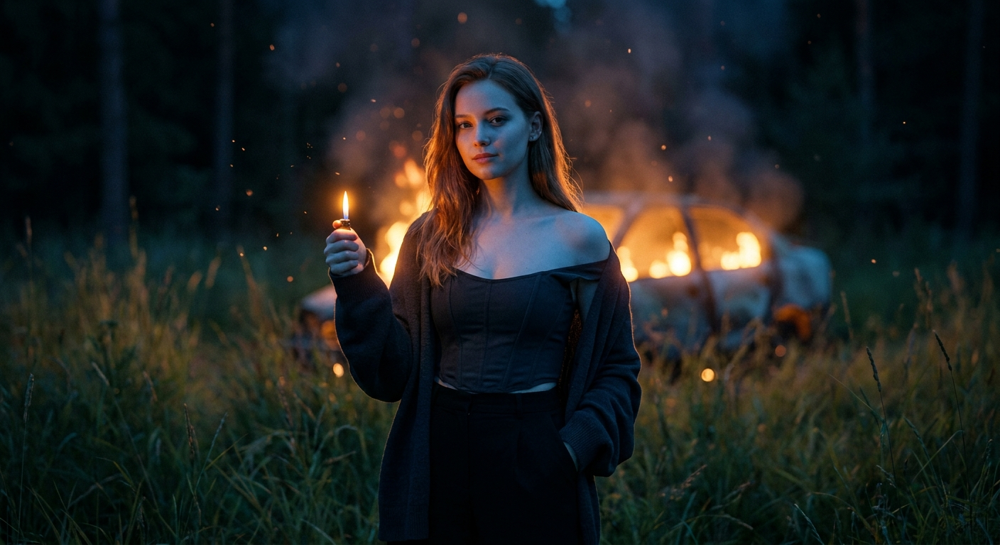
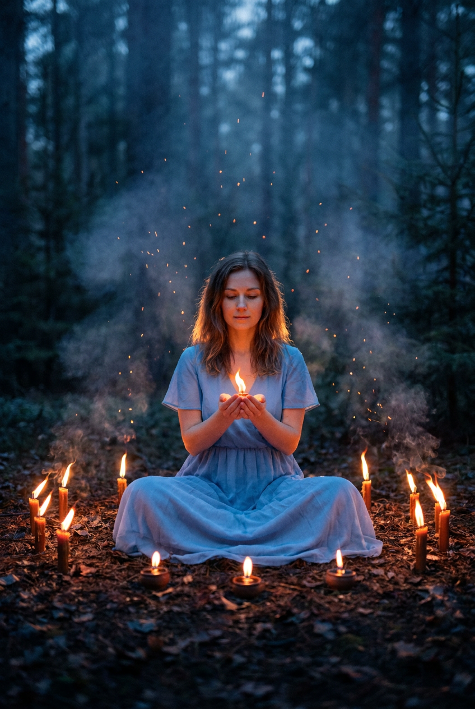
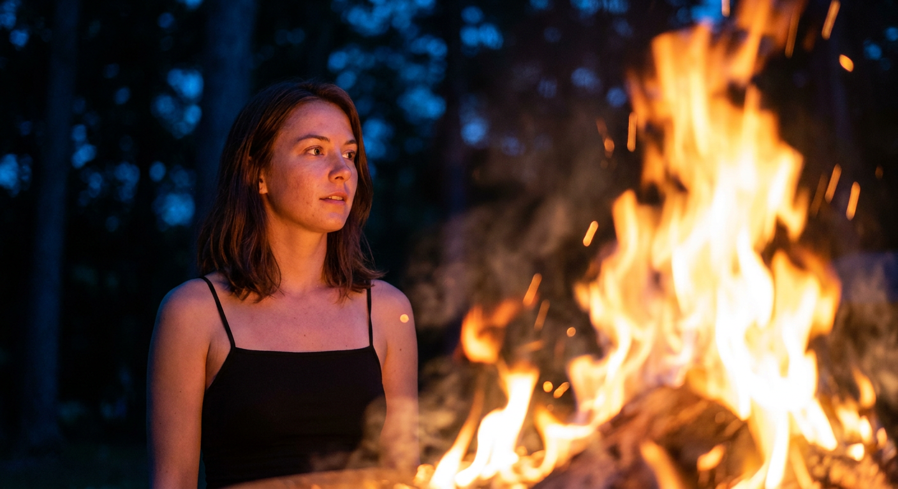
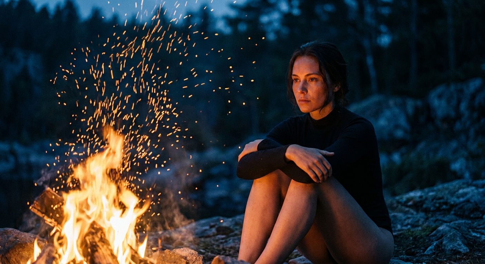
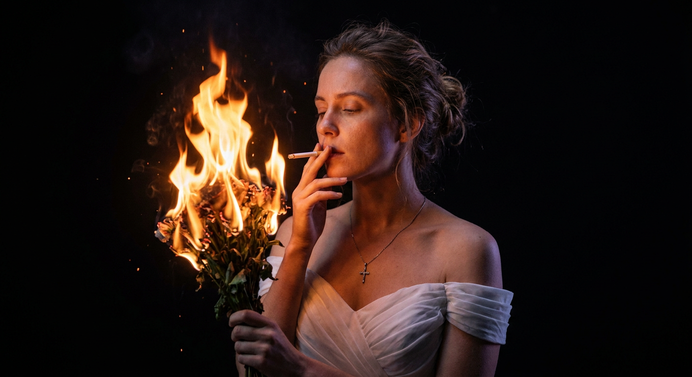
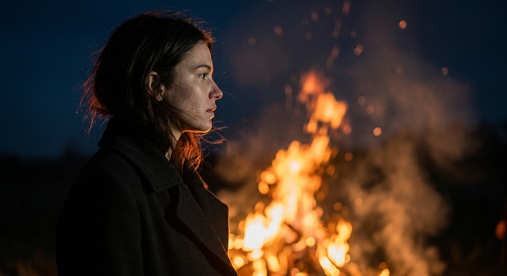
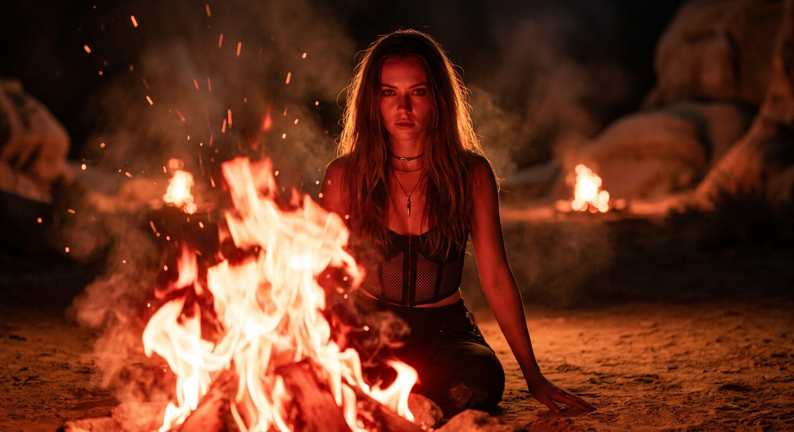
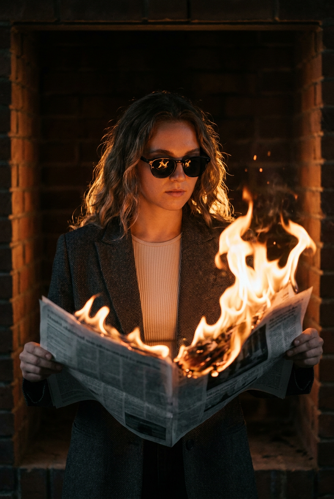

ИИ-фото с огнём: 10 промптов для нейросети

Огонь в генерации часто превращается в бесформенное оранжевое пятно: пальцы ломаются, лицо теряет объём, а дым закрывает героя. Хороший промпт задаёт не только сюжет, но и положение модели, источник света, глубину резкости и характер пламени.
В подборке — десять сценариев для ИИ-фото с огнём: от портрета у костра и ночного лесного ритуала до мотоцикла, горящего автомобиля, кирпичной стены и fashion-съёмки с газетой. Каждый текст можно использовать как основу и адаптировать под свой референс.
Как сгенерировать такое фото: пошагово
Нужен снимок анфас при ровном свете, лицо в кадре целиком, без тёмных очков и головных уборов. Разрешение от 1000 пикселей по короткой стороне. Чем чётче исходник, тем точнее модель повторит черты.
Выберите сценарий ниже и нажмите «Копировать» — текст уйдёт в буфер целиком, вместе с командой сохранения внешности. Эта команда стоит первой строкой и отвечает за то, чтобы на выходе было ваше лицо, а не случайное.
Кнопка «Сгенерировать» рядом с каждым промптом открывает модель в новой вкладке. Nano Banana Pro работает с референсом лица — в отличие от моделей, которые генерируют портрет с нуля и узнаваемость теряют.
Промпт — в поле ввода, портрет — через загрузку референса. Порядок значения не имеет, но без референса команда сохранения внешности работать не будет: модели нечего сохранять.
Для сторис и ленты берите 9:16, для превью и обложек — 4:3. Первый результат редко идеален: если поза или свет ушли не туда, поправьте соответствующую часть промпта и запустите заново. Обычно хватает двух-трёх итераций.
10 промптов для генерации
1. Мотоцикл и огненные кольца
Строго сохранить внешность по загруженному референсу: черты лица, пропорции, мимику и текстуру кожи без изменений. Ночная кинематографичная сцена: взрослая женщина в глянцевом тёмно-бордовом плаще, из-под которого видны чёрный кружевной боди и подвязка на бедре. На ноге — высокий блестящий ботинок на платформе, на шее чокер. Она стоит в чувственной позе и чуть отводит взгляд. Рядом расположен спортивный красно-оранжевый мотоцикл Honda с потёртостями, наклейками и живыми отражениями на лакированных деталях. На заднем плане — крупная инсталляция с пылающими кольцами; огонь создаёт тёплый контровой свет. Драматичный low-key, сочетание холодных ночных теней и горячих оранжевых бликов, реалистичные отражения, чёткая резкость на женщине и байке, фон растворяется в малой глубине резкости. Съёмка на 50 мм, f/1.8–2.8, короткая выдержка замораживает языки пламени, лёгкое плёночное зерно, реалистичная атмосфера.
2. Факел в ночном лесу

Строго сохранить внешность по загруженному референсу: черты лица, пропорции, мимику и текстуру кожи без изменений. Фотореалистичный cinematic fantasy-портрет в ночном low-key свете. Тёмный лес или холмистая местность, на дальнем плане размыты горные очертания и густые деревья. Женщина занимает центральную или правую часть вертикального кадра и показана в профиль 3/4, повернувшись влево. Слева находится факел либо свечной факел; его свет уходит внутрь композиции по диагонали. Модель стоит или полуприсела, корпус вытянут, голова слегка запрокинута, взгляд прикован к пламени. Одной рукой она держит факел за основание, вторую располагает у талии или поддерживает складки платья; кисти и пальцы анатомически корректны. Естественная кожа и спокойная мимика, возраст модели 18–30 лет. Холодный синий свет ночи сочетается с тёплым огнём, в воздухе немного дыма и искр, пламя выглядит физически правдоподобно, фон сильно размытый.
3. Зажигалка и горящий автомобиль

Строго сохранить внешность по загруженному референсу: черты лица, пропорции, мимику и текстуру кожи без изменений. Фотореалистичный cinematic night portrait с атмосферой campfire и эффектом плёночной съёмки. Ночная поляна или тёмное поле, в переднем плане высокая дикая трава, которая слегка колышется, а дальний фон уходит в темноту. Молодая женщина 20–30 лет стоит в центре, немного ближе к камере; поза спокойная и уверенная, спина ровная, плечи расслаблены. В одной руке она держит зажжённую зажигалку, пламя направлено вверх, вторая рука находится в кармане брюк. Пальцы и кисти без анатомических искажений. Позади модели, по центру и чуть выше уровня головы, размыто горит автомобиль; его огни превращаются в мягкое боке. На коже виден холодный синеватый ночной подсвет, а лицо и рука получают тёплые оранжевые блики от маленького огня. Контраст cool blue и hot orange, умеренные искры, low-key, реалистичная фактура кожи, лёгкое зерно.
4. Огненный круг в лесу

Строго сохранить внешность по загруженному референсу: черты лица, пропорции, мимику и текстуру кожи без изменений. Фотореалистичная cinematic fantasy-сцена в духе магического лесного ритуала. Ночной хвойный лес, высокие тёмные деревья, земля покрыта сухими листьями и хвоей. Вертикальная композиция строго симметрична: женщина находится точно в центре открытой площадки и сидит на коленях либо в позе лотоса. Вокруг неё аккуратно выстроен ровный круг из одинаково распределённых источников огня — факелов, свечей или небольших горящих ламп; никакого хаотичного расположения. В ладонях модель удерживает небольшой живой огонь или свечу, чтобы мягкое тепло подсвечивало пальцы, лицо и нижнюю часть волос. Окружающий свет холодный, синевато-голубой, а пламя даёт золотисто-оранжевое свечение. Добавьте реалистичные искры, тонкую дымку и объёмный воздух, но не перекрывайте лицо. Глубокие тени, low-key, мягкий film grain, фон леса затемнён и слегка размыт.
5. Портрет у большого костра

Строго сохранить внешность по загруженному референсу: черты лица, пропорции, мимику и текстуру кожи без изменений. Фотореалистичный cinematic night portrait с тревожным horror-mood без насилия. Девушка занимает левую треть кадра; съёмка выполнена в средне-крупном плане, камера находится немного ниже уровня груди, создавая лёгкий low-angle. Она показана в профиль 3/4, лицо повернуто вправо, взгляд спокойный, но настороженный, будто героиня замерла. Тело слегка развёрнуто к огню, шея вытянута, плечи опущены; руки расслаблены вдоль корпуса или одна рука чуть согнута у тела. Правую и нижнюю части изображения занимает огромный костёр: яркое засвеченное пятно и отдельные языки пламени словно обнимают край кадра. Позади — тёмные деревья и кусты, растворённые в густом боке. Горячий оранжевый свет формирует на лице и волосах выразительные блики, холодный синий заполняющий свет сохраняет детали теней. Реалистичный огонь, умеренный дым, высокая контрастность, кинематографичное зерно.
6. Огненный дождь над скалами

Строго сохранить внешность по загруженному референсу: черты лица, пропорции, мимику и текстуру кожи без изменений. Фотореалистичный cinematic night portrait в эстетике campfire beauty. Открытый природный ландшафт: каменистая почва, неровные скалы или бетоноподобная площадка с травой, пробивающейся между камнями. Девушка сидит на земле или на камнях в нижней части кадра, ближе к центру или справа, тогда как большой костёр доминирует слева. Пламя поднимается вверх и частично закрывает нижнюю часть травы и камней. Над огнём летит большое количество крупных искр и угольков, они расходятся дугой по верхней части изображения, создавая эффект огненного дождя. На заднем плане — тёмные деревья, кусты и дальняя ночь, максимально размытые, чтобы лицо и огонь оставались главными. Холодный тёмный фон контрастирует с горячим оранжевым светом, кожа получает мягкие огненные блики, в воздухе заметны отдельные угольки. Low-key, малая глубина резкости, реалистичные языки пламени, лёгкое film grain.
7. Сигарета от огненного букета

Строго сохранить внешность по загруженному референсу: черты лица, пропорции, мимику и текстуру кожи без изменений. Фотореалистичный cinematic low-key portrait в эстетике dark romantic. Студийная постановка на почти чёрном однотонном фоне без предметов и текстур; глубина сцены создаётся темнотой и мягким боке. Женщина стоит в центре, голова чуть повернута влево, плечи расслаблены, корпус слегка наклонён. Глаза закрыты или полуприкрыты, выражение спокойное и задумчивое, губы мягко сомкнуты. Одной рукой она подносит сигарету к губам, словно прикуривает её от небольшого горящего букета; вторая рука опущена или свободно расположена у корпуса. Пламя занимает правую часть кадра и становится главным световым акцентом, формируя тёплый огненный контровой свет по волосам и контуру лица. Добавьте лёгкий холодный заполняющий свет, чтобы сохранить детали кожи в тенях. Съёмка на портретный объектив 70–120 мм, уровень глаз, без искажений, высокая детализация волос, кожи и огня, реалистичные искры, мягкое плёночное зерно.
8. Профиль на фоне пожара

Строго сохранить внешность по загруженному референсу: черты лица, пропорции, мимику и текстуру кожи без изменений. Фотореалистичный cinematic horror-lifestyle без насилия, ночная сцена с большим костром или горящим сооружением на заднем плане. Крупный или средний план по грудь: девушка стоит в левой части кадра в профиль, корпус развёрнут вправо, лицо направлено к огню или чуть мимо него. За моделью, по центру и справа, поднимается большое пламя; языки огня частично заполняют фон, а между ними видны умеренное количество искр и световых отблесков. Волосы гладкие или слегка струятся, отдельные пряди отделяются от контура головы и подсвечиваются сзади. Резкость держится на профиле лица, линии волос и естественной текстуре кожи, тогда как огонь заметно размыт малой глубиной резкости, но остаётся узнаваемым и физически правдоподобным. Сильный контраст горячего оранжевого света и глубоких ночных теней, тонкий дым, реалистичные языки пламени, мягкие блики на коже, кинематографичное зерно.
9. Ритуал среди дальних костров

Строго сохранить внешность по загруженному референсу: черты лица, пропорции, мимику и текстуру кожи без изменений. Фотореалистичный cinematic night portrait в стиле dark fantasy и ritual campfire. Пустынный каменистый участок или долина с мягкими контурами скал на размытом заднем плане; земля тёплого песочно-коричневого оттенка. На переднем плане внизу кадра горит большой костёр, его объёмные языки занимают значительную часть нижней зоны изображения. Вдалеке видны ещё несколько очагов, они светятся тёплым огнём и превращаются в мягкие размытые пятна. Девушка находится в центре, сидит на земле с согнутыми коленями, корпус немного наклонён вперёд. Камера установлена на уровне глаз или чуть ниже, умеренный low-angle позволяет переднему огню визуально возвышаться рядом с моделью. Красно-оранжевое пламя даёт жёсткие блики на лице и одежде, вокруг остаются глубокие тени. Добавьте реалистичные искры, дым, сильный объём огня и кинематографичную цветокоррекцию без пересвета кожи.
10. Огонь, книга и кирпич

Строго сохранить внешность по загруженному референсу: черты лица, пропорции, мимику и текстуру кожи без изменений. Фотореалистичный cinematic low-key portrait в тёмной каминной нише с кирпичной кладкой на заднем плане. Вертикальный кадр по грудь и голову, женщина расположена по центру и слегка повёрнута в сторону, камера смотрит на неё с уровня глаз под небольшим углом 3/4. На переднем плане доминируют раскрытая книга и языки пламени; рядом лежит верхняя часть полусгоревшего газетного разворота. На модели чёрные солнечные очки: оправа и линзы матовые, без отражений и бликов. Резкость точная на лице, очках, верхней части обгоревшей газеты и ближайшей зоне огня. Кирпичная стена остаётся узнаваемой, но уходит в мягкое боке; текстура кирпичей и швы читаются лишь в расфокусированных участках. Тёплый оранжево-золотой свет пламени сочетается с глубокими тенями, кожа и волосы выглядят реалистично, огонь не превращается в плоское пятно. Кинематографичный контраст, малая глубина резкости, лёгкое зерно.
Что важно учесть в этом стиле
Огню нужен конкретный источник и понятная геометрия: костёр слева, факел в руке, пламя на переднем плане или контровой свет за волосами. Если просто добавить «много огня», нейросеть часто закрывает лицо, руки и одежду.
Контраст лучше задавать парой цветов: холодный синий фон и горячий оранжевый свет. Для портрета указывайте объектив и диафрагму — например, 85 мм, f/2.0. Для заморозки искр и языков пламени добавляйте короткую выдержку, а для атмосферы — умеренный дым и мелкое зерно.
Идеи для вариаций
- Замените костёр на ряд керосиновых ламп в заброшенной оранжерее.
- Добавьте мокрый асфальт, чтобы пламя отражалось в лужах.
- Перенесите сцену в заснеженный лес с голубым лунным светом.
- Сделайте огонь единственным источником света в старой мастерской.
- Попросите нейросеть показать отражение пламени в металлических украшениях.
- Для fashion-версии замените повседневную одежду на бархатный костюм, плащ или платье с фактурной вышивкой.
Как собрать свой промпт
Начните с формата и жанра: «вертикальный фотореалистичный портрет, cinematic night, low-key». Затем задайте локацию, положение модели в кадре, позу, направление взгляда и реквизит. После этого опишите огонь: где он находится, какого он размера, что освещает и насколько размывается.
Финальный слой — камера и ограничения. Укажите фокусное расстояние, диафрагму, глубину резкости, цветовую пару, количество дыма и характер искр. Для референса можно добавить: «сохранить узнаваемые черты лица, пропорции и форму причёски». Если пальцы или огонь вышли плохо, меняйте по одному параметру и делайте 3–5 повторных генераций.
Ошибки, из-за которых кадр не получается
- Слишком много эффектов. Дым, искры, пепел и блики одновременно перекрывают лицо и делают сцену мутной.
- Не задан источник света. Укажите, откуда приходит огонь и какие части лица он подсвечивает.
- Огонь без масштаба. Добавьте костёр, факел или очаг конкретного размера и расположите его относительно модели.
- Нет указания на глубину резкости. Иначе нейросеть может сделать одинаково резкими лицо, фон и пламя.
- Сложная поза без уточнений. Для рук отдельно опишите, что держит каждая кисть и где находятся пальцы.
- Пересвеченная кожа. Попросите сохранить детали лица, умеренную экспозицию и тёплые блики вместо сплошного белого света.
Частые вопросы
Как сделать такое ИИ-фото бесплатно?
Попробуйте Kandinsky или Шедеврум: у них есть бесплатная генерация, но число попыток, скорость и доступ к редактированию могут меняться. Krea AI и Arena.ai позволяют тестировать разные режимы, однако бесплатные лимиты зависят от текущих правил. Референс поддерживается не во всех сценариях: иногда можно загрузить фото, а иногда доступна только генерация по тексту. Для сохранения лица лучше проверить настройки изображения и сделать несколько вариантов.
Как сохранить лицо с загруженного фото?
Загрузите чёткий референс без сильных теней и поворота головы. В промпте отдельно укажите сохранение черт лица, формы глаз, носа, губ, причёски и пропорций. Не перегружайте описание макияжем и сложными аксессуарами: они часто меняют внешность. Если сервис поддерживает силу влияния референса, начните со среднего значения и сделайте 3–5 вариантов.
Почему нейросеть искажает пальцы рядом с огнём?
Кисти возле яркого и динамичного объекта относятся к сложным зонам: модель одновременно рисует пальцы, хват и световые блики. Описывайте каждую руку отдельно, не просите несколько жестов сразу и держите реквизит простым. После генерации используйте режим редактирования или перерисовку только проблемной области.
Как сделать пламя реалистичным, а не мультяшным?
Задайте физические детали: источник огня, направление языков, умеренный дым, отдельные искры, отражения на коже и короткую выдержку. Укажите, что пламя должно сохранять естественную структуру и не перекрывать лицо. Для портретов полезно размывать дальний огонь, но оставлять резкой ближайшую зону, которая освещает модель.